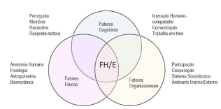
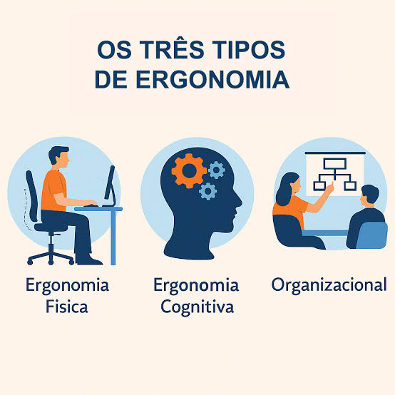

Ergonomia física
Anatomia humana, fisiologia, antropometria e biomecânica. Exemplo: altura da mesa, cadeira com apoio lombar e postura.
A definição de ergonomia e demais conceitos apresentados abaixo foram traduzidos e elaborados com base no que está publicado no site da Associação Internacional de Ergonomia – IEA (2020).
A palavra ergonomia – “a ciência do trabalho” – deriva do grego ergon (trabalho) e nomos (leis). Ergonomia (ou fatores humanos) é a disciplina científica preocupada com a compreensão das interações entre humanos e outros elementos de um sistema, e a profissão que aplica teoria, princípios, dados e métodos para projetar a fim de otimizar o bem-estar humano e o desempenho geral do sistema.
Os termos ergonomia e fatores humanos são frequentemente usados alternadamente ou como uma unidade (por exemplo, fatores humanos/ergonomia, FH/E), uma prática que é adotada pela Associação Internacional de Ergonomia – IEA.
Embora os praticantes da ergonomia frequentemente trabalhem em setores econômicos, indústrias ou campos de aplicação específicos, a ciência e a prática da ergonomia não são específicas de um só domínio. Ergonomia é uma ciência integradora multidisciplinar e centrada no usuário. Os problemas que a ergonomia aborda são tipicamente de natureza sistêmica; assim, a ergonomia usa uma abordagem holística de sistemas para aplicar teorias, princípios e dados de muitas disciplinas relevantes ao projeto e avaliação de tarefas, trabalhos, produtos, ambientes e sistemas. A ergonomia leva em consideração os fatores físicos, ambientais, cognitivos, organizacionais, sociotécnicos e outros fatores relevantes, bem como as complexas interações entre o ser humano e outros humanos, o meio ambiente, ferramentas, produtos, equipamentos e tecnologia.
Para praticar a ergonomia de forma efetiva, os profissionais de ergonomia que se especializem em um determinado domínio ou disciplina devem abordar questões e desafios com consideração suficiente de todos os elementos relevantes da ergonomia. Isso pressupõe um amplo conhecimento também de outras áreas da ergonomia. Esta visão integrada para a prática da ergonomia está representada na Figura 1. No entanto, a resolução real de problemas requer abordagens participativas por meio de consulta com especialistas em ergonomia em diferentes domínios, bem como especialistas em outras áreas relevantes.

Fonte: adaptado de IEA (2020). [colar aqui o URL da imagem]
Os princípios da ergonomia estão enraizados em valores sociotécnicos. Os princípios e metodologias de design participativo da ergonomia aplicam-se ao design de tarefas, trabalhos, produtos, ambientes, setores e tipos de trabalho. Os princípios da ergonomia estão enraizados em valores essenciais (READ et al., 2018 e OIT, 2019 apud IEA, 2021):
Em 2000, a IEA e a ABERGO organizaram a área em três domínios de especialização, muito usados no ensino e nos materiais didáticos (CHRUSCIAK et al., 2020). Em 2020, a IEA passou a enfatizar que a ergonomia não tem domínios específicos e que as questões devem ser tratadas de forma integrada, como mostra a Figura 1 (IEA, 2020). Por isso, a divisão abaixo serve para estudar a área, não para separar problemas reais.
Anatomia humana, fisiologia, antropometria e biomecânica. Exemplo: altura da mesa, cadeira com apoio lombar e postura.
Percepção, memória, raciocínio e resposta motora. Exemplo: telas e painéis fáceis de entender, sem excesso de informação.
Participação, cooperação, comunicação e trabalho em equipe. Exemplo: pausas, divisão de tarefas e metas realistas.

Fonte: [colar aqui o URL da imagem]